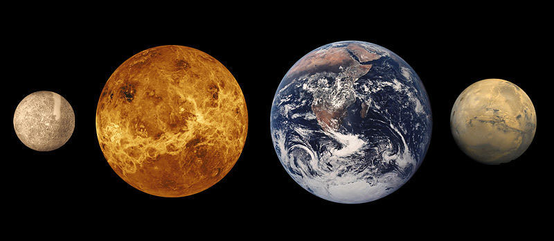
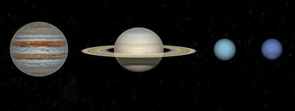

太阳系
一颗恒星、八大行星、四个矮行星、至少六十三颗卫星、约一百万颗小行星、无数的彗星和星际物质
首页＞走近太阳系
太阳系
What is Solar System？
至今约四十六亿年前，伴随着太阳的形成，太阳星云由于自身引力的作用而逐渐凝聚，渐渐形成了一个由多个天体按一定规律排列组成的天体系统，这就是太阳系。
太阳系是以太阳为中心，和所有受到太阳的引力约束天体的集合体。太阳系的成员包括八大行星（由离太阳从近到远的顺序：水星、金星、地球、火星、木星、土星、天王星、海王星 ）、至少173颗已知的卫星、5颗已经辨认出来的矮行星和数以亿计的太阳系小天体。
太阳系位于银河系（直径100,000光年，拥有超过二千亿颗恒星的棒旋星系，而非漩涡星系）内。我们的太阳位居银河外围的一条旋臂上，称为猎户臂或本地臂。太阳距离银心25,000至28,000光年，在银河系内的速度大约是220公里/秒，因此环绕银河公转一圈需要2亿2千5百万至2亿5千万年，这个公转周期称为银河年。
行星
What is planet？
从远古时代起，五个肉眼可见的经典行星就已经被人们熟知，他们对神学、宗教宇宙学和古代天文学都有重要的影响。在古代，天文学家记录了一些特定的光点是相对于其他星星如何移动跨越天空。古希腊人把这些光点叫做“πλάνητες ἀστέρες”（即planetes asteres，游星）或简单的称为“πλανήτοι”（planētoi，漫游者），今天的英文名称行星（planet）就是由此演化出来的。
如何定义行星这一概念在天文学上一直是个备受争议的问题。国际天文学联合会大会2006年8月24日通过了“行星”的新定义，这一定义包括以下三点:
1、必须是围绕恒星运转的天体；
2、质量必须足够大，来克服固体引力以达到流体静力平衡的形状（近于球体）；
3、必须清除轨道附近区域，公转轨道范围内不能有比它更大的天体。
八大行星
The eight major planets
按照对行星的定义，太阳系中共有八个大行星，按照离太阳的距离从近到远，它们依次为水星（☿）、金星（♀）、地球（⊕）、火星（♂）、木星（♃）、土星（♄）、天王星（♅）、海王星（♆）。八大行星自转方向多数也和公转方向一致。只有金星和天王星两个例外。金星自转方向与公转方向相反。
与过去的的九大行星概念不同，在2006年8月24日于布拉格举行的第26届国际天文学联会中通过的第5号决议中，冥王星被划为矮行星，从太阳系九大行星中被除名。 因为，违背了行星定义的第三条，冥王星不仅不能清除其轨道附近区域，而且它的卫星过于巨大，形成了双星系统。根据这个定义，冥王星被归为矮行星。
类地行星
Terrestrial planet
这个区域挤在靠近太阳的范围内，半径还比木星与土星之间的距离还短。

水星（Mercury ☿）（0.4 天文单位）
是最靠近太阳，也是最小的行星（0.055地球质量）。它没有天然的卫星，仅知的地质特征除了撞击坑外，只有大概是在早期历史与收缩期间产生的皱折山脊。 水星，包括被太阳风轰击出的气体原子，只有微不足道的大气。截至2013年，尚无法解释相对来说相当巨大的铁质核心和薄薄的地幔。假说包括巨大的冲击剥离了它的外壳，还有年轻时期的太阳能抑制了外壳的增长。金星（Venus♀）（0.7 天文单位）
的体积尺寸与地球相似（0.86地球质量），也和地球一样有厚厚的硅酸盐地幔包围着核心，还有浓厚的大气层和内部地质活动的证据。但是，它的大气密度比地球高90倍而且非常干燥，也没有天然的卫星。它是颗炙热的行星，表面的温度超过400℃，很可能是大气层中有大量的温室气体造成的。没有明确的证据显示金星的地质活动仍在进行中，但是没有磁场保护的大气应该会被耗尽，因此认为金星的大气是经由火山的爆发获得补充。地球（Earth⊕）（1 天文单位）
是内行星中最大且密度最高的，也是唯一地质活动仍在持续进行中并拥有生命的行星（至今科学家还没有探索到其他来自太空的生物）。它也拥有类地行星中独一无二的水圈和被观察到的板块结构。地球的大气也于其他的行星完全不同，被存活在这儿的生物改造成含有21%的自由氧气。它只有一颗卫星，即月球；月球也是类地行星中唯一的大卫星。地球公转（太阳）一圈约365天，自转一圈约1天。（太阳并不是总是直射赤道，因为地球围绕太阳旋转时，稍稍有些倾斜。）火星（Mars ♂ ）（1.5 天文单位）
比地球和金星小（0.17地球质量），只有以二氧化碳为主的稀薄大气，它的表面，例如奥林匹斯山有密集与巨大的火山，水手号峡谷有深邃的地堑，显示不久前仍有剧烈的地质活动。火星有两颗天然的小卫星，戴摩斯和福伯斯，可能是被捕获的小行星。类木行星
Jovian planet
在外侧的四颗行星，也称为类木行星，囊括了环绕太阳99%的已知质量。
